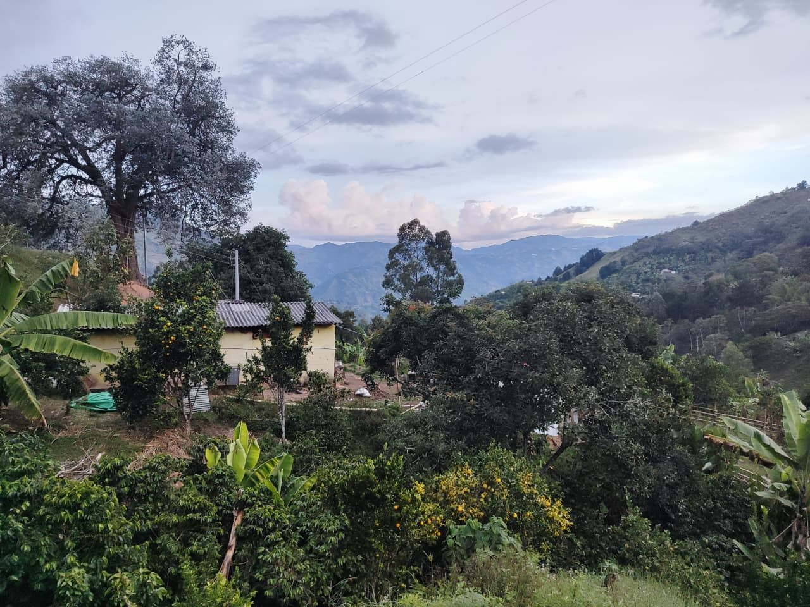

Del campo a tu mesa
Alma Caprina se identifica por hacer las cosas con pasión y desde el amor, lo cual se refleja en la calidad de cada producto que llevamos a la mesa de nuestros clientes: leche, yogures y quesos con un sabor exquisito, con un aporte nutricional significativo para el funcionamiento óptimo de nuestro organismo.
Lo que nos mueve son los caprinos. Son animales tiernos y muy especiales, y entre más cariño les damos, mejor leche nos dan.
Empezamos a producir lácteos y derivados cuando descubrimos lo nutritiva y lo sabrosa que es la leche de cabra. Hoy trabajamos desde Montebello, Antioquia (vereda Caunzal), en un lugar tranquilo que se siente también en nuestros productos.
Hacemos todo de forma artesanal, desde el campo, para llevarlo hasta la casa de quienes lo consumen.
Estamos plenamente comprometidos con mejorar cada día para seguir ofreciendo lo mejor para sus hogares.
«Alimentos reales, para familias reales.»
- ArtesanalHecho desde el campo, con cariño.
- Sin conservantesProductos naturales.
- Consume localDe nuestra finca directo a tu casa.
